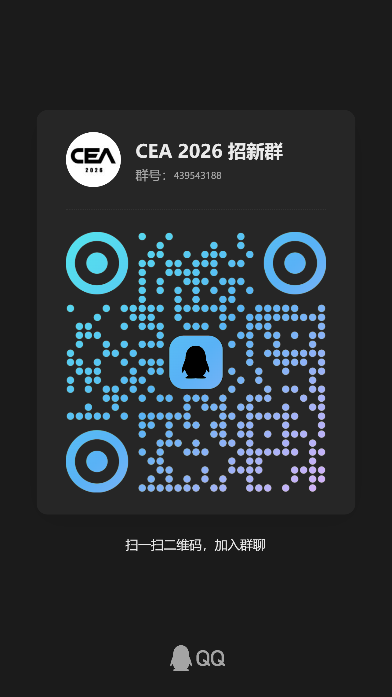

秋季招新
带 * 的为必填。
复制链接加入群聊【CEA 2026 招新群】（439543188）： https://qm.qq.com/q/l5rSJnmsOk
报名已提交
请加入群聊方便后续通知。复制链接加入群聊【CEA 2026 招新群】（439543188）： https://qm.qq.com/q/l5rSJnmsOk

带 * 的为必填。
复制链接加入群聊【CEA 2026 招新群】（439543188）： https://qm.qq.com/q/l5rSJnmsOk
请加入群聊方便后续通知。复制链接加入群聊【CEA 2026 招新群】（439543188）： https://qm.qq.com/q/l5rSJnmsOk
